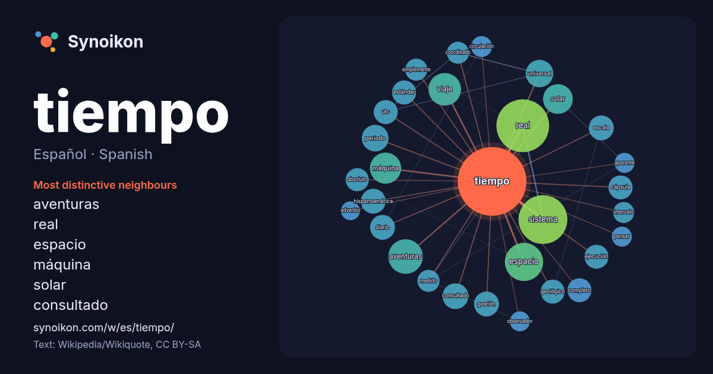

Español · Spanish · word of the day list
tiempo
“time” · The words found around it in 1617 instances from Spanish Wikipedia, Wikiquote.

Most distinctive neighbours
- aventuras 25×
- real 23×
- espacio 19×
- máquina 17×
- solar 17×
- consultado 16×
- viaje 15×
- sistema 15×
- hispanoamérica 14×
- universal 14×
- geológico 13×
- utc 13×
- cápsula 13×
- medido 12×
- coordinado 12×
- ejecución 12×
- absoluto 12×
- escala 11×
- gestión 11×
- estándar 10×
× = how many times more often than in general Spanish Wikipedia text.
Most frequent neighbours
- real 63
- sistema 54
- espacio 33
- aventuras 27
- historia 25
- viaje 24
- máquina 22
- película 21
- españa 20
- forma 20
- solar 20
- álbum 19
- unidad 18
- año 17
- universal 17
- nombre 16
- periodo 16
- conocido 15
- consultado 15
- término 15
In context
- asociado a que en mecánica clásica el tiempo y el espacio son absolutos. En mecánica relativista el concepto de tiempo es más complejo: los hechos simultáneos Wikipedia snippets · Tiempo
- El espacio-tiempo (también: espaciotiempo) es el modelo matemático que combina el espacio y el tiempo en un solo objeto continuo de cuatro dimensiones Wikipedia snippets · Espacio-tiempo
- de tiempo real es un sistema informático que interacciona con su entorno físico y responde a los estímulos del entorno dentro de un plazo de tiempo determinado Wikipedia snippets · Sistema de tiempo real
- diferentes puntos del tiempo, de forma análoga al desplazamiento en el espacio. En ciertas interpretaciones, el viaje en el tiempo también incluiría el Wikipedia snippets · Viaje a través del tiempo
- gramática, el tiempo gramatical se refiere al tiempo referencial de una oración, y puede diferenciarse en dos tipos principales: a) el tiempo absoluto, que Wikipedia snippets · Tiempo gramatical
- acuerdo con la teoría de la relatividad, la dilatación del tiempo es una diferencia en el tiempo transcurrido medido por dos observadores, ya sea debido Wikipedia snippets · Dilatación del tiempo
- (actualizar) El tiempo universal coordinado o UTC es el principal estándar de tiempo por el cual el mundo regula los relojes y el tiempo. Es uno de los Wikipedia snippets · Tiempo universal coordinado
- El tiempo atmosférico o meteorológico o temperie es el estado de la atmósfera en un momento y lugar determinados definido por diversas variables meteorológicas Wikipedia snippets · Tiempo atmosférico
More Spanish words
- agua
- arte
- bosque
- caballo
- camino
- campana
- canción
- ciencia
- ciudad
- clima
- comida
- corazón
- desierto
- dinero
- dios
- espejo
- estrella
- familia
- fuerza
- gato
- historia
- invierno
- isla
- jardín
- lengua
- lluvia
- madre
- mapa
- miel
- montaña
- muerte
- naturaleza
- oro
- otoño
- pan
- perro
- puente
- reloj
- sal
- salud
- silencio
- sombra
- tormenta
- trabajo
- tren
- té
- verano
- verdad
- vida
Precomputed on 2026-10-09 with default settings (±5 words, medium corpus). The interactive map can refresh it with live data.